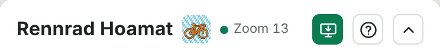
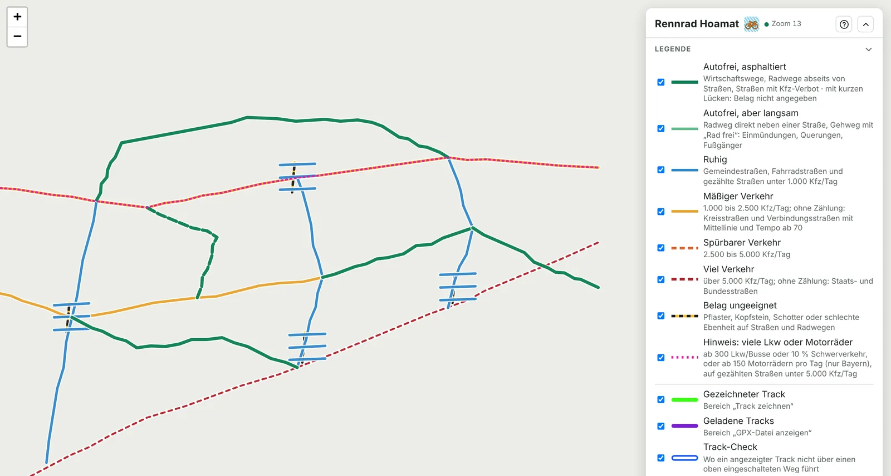
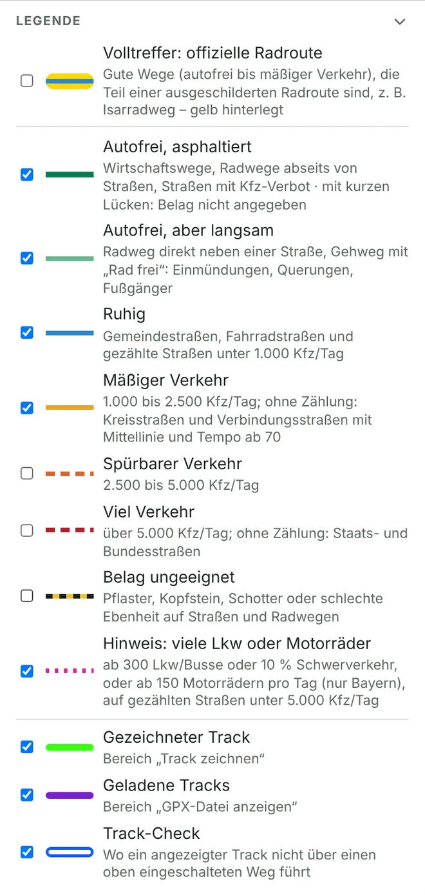
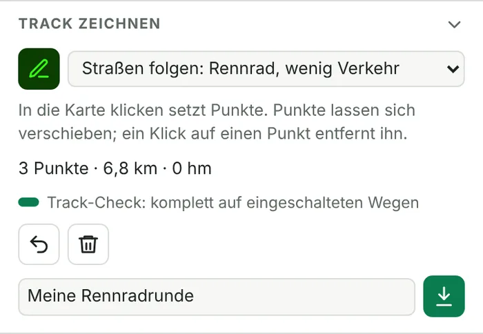
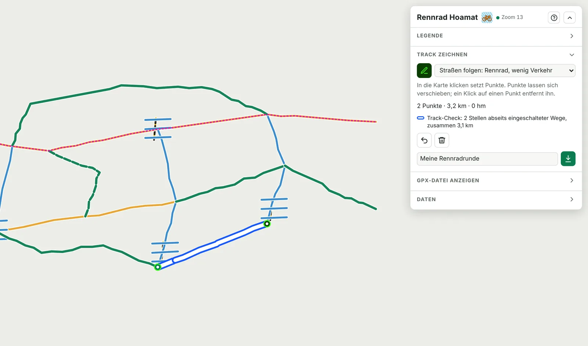
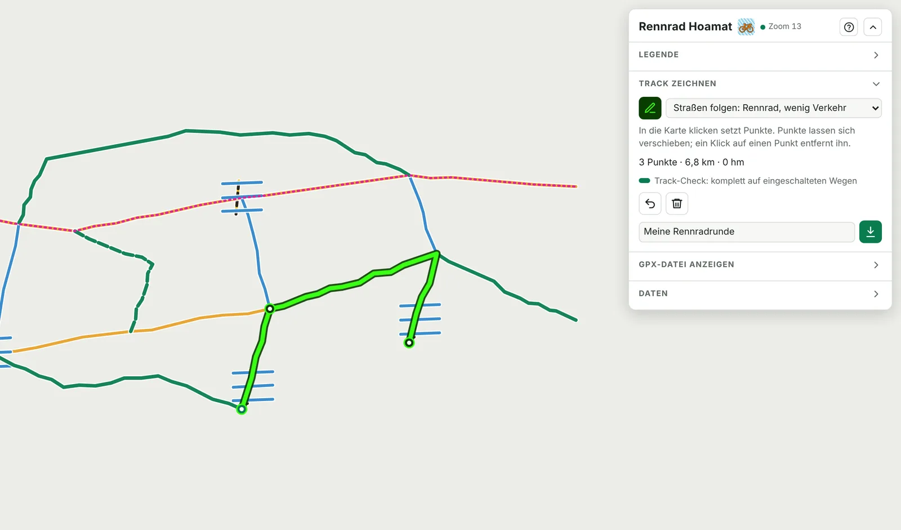
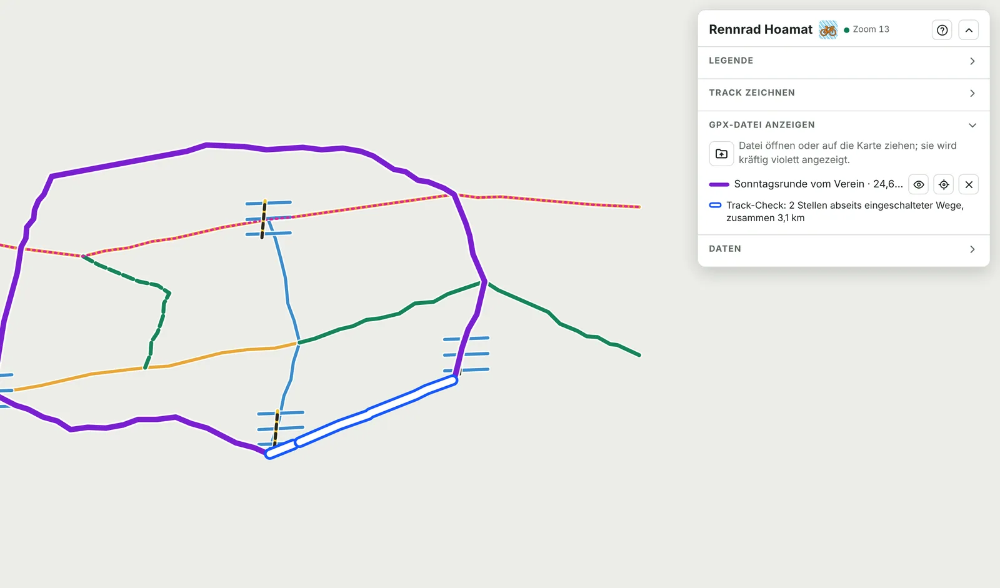
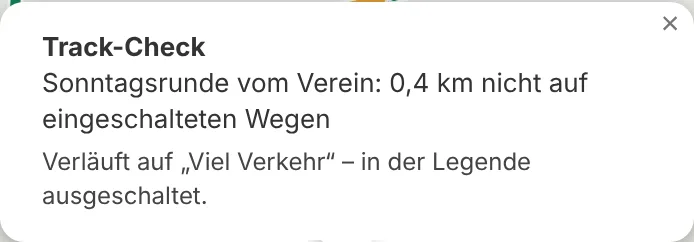
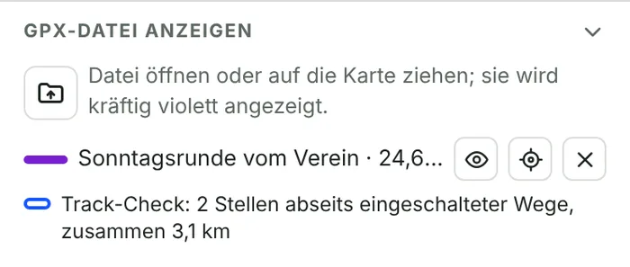

Für wen ist Rennrad Hoamat gedacht?
Für Rennradfahrerinnen und Rennradfahrer, die Asphalt lieben und Autoverkehr meiden. Die Geschwindigkeit ist dabei zweitrangig: Wichtig ist, dass die Fahrt Freude macht und man sich sicher fühlt.
Genussfahrer
Wer die Landschaft genießen will statt auf den Rückspiegel zu achten.
Sicherheitsbewusste
Wiedereinsteiger, Ältere, Jugendliche – und alle, die schon einmal zu knapp überholt wurden.
Ausfahrtenleiter im Verein
Eine Gruppe braucht ruhige Straßen noch dringender als ein Einzelner.
Warum es dafür kaum Hilfe gibt
Ruhige Straßen sind schwer zu finden, denn die gängigen Werkzeuge schauen auf etwas anderes:
- Routenplaner wählen die schnellste oder kürzeste asphaltierte Strecke. Wie viel Verkehr auf einer Straße fährt, wissen sie meist nicht. Sie schätzen nur grob nach der Straßenart.
- Beliebtheitskarten zeigen, wo viele Radfahrer unterwegs sind. Das sind oft gerade die schnellen Staatsstraßen, nicht die stillen Wege.
- Radwegekarten sind für Alltags- und Tourenradler gemacht. Für das Rennrad stecken darin zu viel Schotter, Pflaster und Radwege mit Einfahrten alle paar Meter.
- Amtliche Verkehrszählungen gibt es zwar, aber gut versteckt in Fachportalen der Straßenbauverwaltungen.
Rennrad Hoamat führt das zusammen. Die Karte färbt jeden Weg nach Belag und Verkehrsmenge ein und nutzt dafür amtliche Zählungen, wo es sie gibt.
Wann dir die App hilft
Neue Hausrunde
Raus aus dem Trott – ohne Experimente auf der Bundesstraße.
Urlaub und Trainingslager
Unbekannte Gegend, zum Beispiel in Südtirol: Vorher sehen, wo es ruhig ist.
Vereinsausfahrt
Eine Gruppenrunde vorbereiten, die alle entspannt fahren können.
Fremde Tracks
Ein Freund schickt eine GPX-Datei? In einer Minute siehst du, wo es heikel wird.
Am PC planen, am Rad fahren
Rennrad Hoamat ist ein Planungswerkzeug für den Schreibtisch. Auf dem Handy lässt es sich zwar öffnen, sinnvoll ist das aber kaum.
Großer Bildschirm
Erst auf einem großen Bildschirm siehst du die vielen Farben und Wege in einer Gegend im Zusammenhang.
Maus statt Finger
Wegpunkte setzt und verschiebst du mit der Maus genau auf den richtigen Weg.
GPX-Dateien
Tracks speichern und öffnen geht am PC am einfachsten.
Keine Navigation
Unterwegs gibt es weder Ansagen noch deinen Standort. Dafür ist dein Radnavi da.
Wo die App am besten funktioniert
Belag und Wegeart kommen überall aus OpenStreetMap. Den Unterschied macht die Verkehrsmenge: Je mehr echte Zählungen es gibt, desto verlässlicher sind die Farben.
Bayern
Am besten: Die amtliche Verkehrszählung liegt für ganze Straßenabschnitte vor, mit Lkw- und Motorradanteil und dem Verkehr am Sonntag.
Baden-Württemberg und Südtirol
Gut: Zählstellen an den Bundes-, Landes- und Kreisstraßen. Ihr Wert gilt für den Straßenzug bis zur nächsten größeren Einmündung.
Tirol, Salzburg und alle anderen Gegenden
Brauchbar: Tirol und Salzburg zählen zwar auch, veröffentlichen die Werte aber nur als PDF-Tabellen ohne Lageangaben – die App kann sie deshalb nicht nutzen. Hier und in allen anderen Gegenden wird der Verkehr geschätzt: aus der Straßenart (Kreisstraße mäßig, Staats- oder Bundesstraße viel), verfeinert durch Mittellinie, Fahrstreifen, Tempo und Breite. Die amtliche graue Hintergrundkarte gibt es für Deutschland, Österreich und Südtirol.
Für wen die App eher nichts ist
- Gravel- und Mountainbike-Fahrer: Schotter und Feldwege blendet die App bewusst aus.
- Wer unterwegs navigieren will: Es gibt keine Ansagen und keinen Standort, die App ist ein Planungswerkzeug.
- Wer die schnellste Strecke sucht: Ruhige Wege sind oft ein paar Kilometer länger.
- Wer nach Höhenmetern plant: Ein Höhenprofil oder Steigungsangaben bietet die App nicht. Die Gesamthöhenmeter einer Runde zeigt sie nur, wenn die Daten sie liefern.
- Pendler, die jeden Tag in die Stadt fahren: Für den Stadtverkehr ist die App nicht gemacht.
- Wer weit außerhalb von Bayern, Baden-Württemberg und dem Alpenraum fährt: Dort sind die Farben nur Schätzungen.
Was du damit machen kannst
Wege erkennen
Jeder befahrbare Weg ist nach Belag und Verkehr eingefärbt, von „autofrei“ bis „viel Verkehr“.
Runden zeichnen
Punkte setzen, die Route folgt den Straßen, und den Track speicherst du als GPX-Datei.
Tracks anzeigen
Vorhandene GPX-Dateien legst du kräftig violett über die Karte.
Track-Check
Weiß mit blauem Rand markiert die App jede Stelle, an der ein Track deine gewünschten Wege verlässt.
Details abfragen
Ein Klick auf einen Weg zeigt Belag, Kfz pro Tag, Lkw-Anteil und den Verkehr am Sonntag.
Kurz drunterschauen
Tracks ausblenden, um zu sehen, was unter ihnen liegt.
In 5 Schritten zur ersten Runde
- App öffnenÖffne walterhansi.github.io/rennrad-hoamat am PC.
- HinzoomenZoome in deine Gegend, bis neben dem Titel ein ● grüner Punkt erscheint. Dann färbt die App die Wege ein.
- Unerwünschtes ausblendenEntferne in der Legende die Häkchen bei „Spürbarer Verkehr“, „Viel Verkehr“ und „Belag ungeeignet“.
- Runde zeichnenKlicke auf den Stift unter „Track zeichnen“ und dann nacheinander in die Karte. Gibt es weiß-blaue Markierungen, setzt du einen Punkt um.
- SpeichernGib der Runde einen Namen und klicke auf den grünen Pfeil nach unten. Die GPX-Datei spielst du auf dein Navi.
Als App installieren
Installieren ist kein Muss, aber bequem: Rennrad Hoamat startet dann aus dem Startmenü in einem eigenen Fenster, ganz ohne Browserleiste.
- Seite im Browser öffnenwalterhansi.github.io/rennrad-hoamat – am besten in Chrome oder Edge.
- Auf den grünen Knopf klickenOben rechts im Panel erscheint ein grüner Knopf mit Bildschirm-Symbol. Ein Klick darauf, dann „Installieren“.

Grüner Knopf = installieren · ? = diese Anleitung · Pfeil = Panel einklappen - FertigRennrad Hoamat steht jetzt im Startmenü und lässt sich an die Taskleiste heften.
Aktualisierungen kommen von selbst. Beim nächsten Start lädt die App eine neue Version, du musst nichts tun.
Die Karte lesen

1 2 3 4- Zoom: mit dem Mausrad oder den Knöpfen + und −. Darunter wählst du die Hintergrundkarte: „Amtlich grau“ ist ruhig und passt am besten, OpenTopoMap zeigt Höhenlinien.
- Eingefärbte Wege: Ein Klick auf einen Weg öffnet ein Fenster mit Belag, Kfz pro Tag, Lkw- und Motorradanteil.
- Zoomanzeige: Bei ● grün siehst du die Wege. Bei ● rot ist der Ausschnitt zu groß, dann einfach näher heranzoomen.
- Legende: Jedes Häkchen blendet eine Wegart ein oder aus. Was du hier ausschaltest, gilt auch für den Track-Check.
Was die Farben draußen bedeuten
Eine Runde planen, die nur über gute Wege führt
So legst du eine Strecke an, die nach den verfügbaren Daten nur über asphaltierte Wege mit wenig Autoverkehr führt. Der Track-Check zeigt dir jede Stelle, an der das noch nicht stimmt.
- Gegend ansteuernZoome heran, bis die Zoomanzeige grün ist. Schiebe die Karte an deinen Startort.
- Festlegen, was erlaubt istEntferne in der Legende die Häkchen bei allem, was du nicht fahren willst. Für eine ganz ruhige Runde sind das „Spürbarer Verkehr“, „Viel Verkehr“ und „Belag ungeeignet“. Wer auch Radwege an der Straße meiden will, schaltet zusätzlich „Autofrei, aber langsam“ aus. Was übrig bleibt, ist dein Wegenetz.

Jedes Häkchen ist ein Schalter. - Zeichnen einschaltenKlicke unter „Track zeichnen“ auf den Stift; er wird dunkelgrün. Wähle in der Liste daneben „Straßen folgen: Rennrad, sehr wenig Verkehr“.

Stift · Routenart · Zurück · Löschen · Name · Speichern - Punkte setzenKlicke auf den Startpunkt und dann nacheinander auf Wege, die in deiner Legende eingeschaltet sind. Die Route folgt automatisch den Straßen und erscheint leuchtend grün. Tipp: Lieber ein paar Punkte mehr setzen und sie direkt auf die gewünschten Wege legen.
- Den Track-Check lesenWo die Route einen eingeschalteten Weg verlässt, erscheint eine dicke weiße Linie mit blauem Rand. Unter dem Track steht, wie viele Stellen es sind.

Vorher
Die Route nimmt die Staatsstraße. Die ist ausgeblendet, deshalb markiert der Track-Check die Stelle. - KorrigierenSetze einen Zwischenpunkt auf einen eingeschalteten Weg daneben oder ziehe einen vorhandenen Punkt dorthin. Ein Klick auf einen Punkt löscht ihn, und der Pfeil nach links nimmt den letzten Punkt zurück. Wiederhole das, bis unter dem Track „komplett auf eingeschalteten Wegen“ steht.

Nachher
Ein Zwischenpunkt lenkt die Runde über die Gemeindestraße und den Wirtschaftsweg. Keine Markierung mehr. - Zweifelsfälle anschauenKlicke auf Wege, die dir unbekannt sind: Das Fenster zeigt den Belag und, wo vorhanden, die Zählwerte. Bei grünen Linien mit kurzen Lücken ist der Belag nicht eingetragen. Im Zweifel hilft der Link „In OpenStreetMap ansehen“.
- SpeichernGib unten einen Namen ein und klicke auf den grünen Pfeil nach unten. Deine Runde liegt jetzt als GPX-Datei auf dem PC.
So gut wie die Daten. Belag und Wegeart stammen aus OpenStreetMap, einer Karte von Freiwilligen. Sie ist meist sehr genau, aber eine frisch geschotterte Baustelle oder ein neues Verbot kann fehlen.
„Komplett auf eingeschalteten Wegen“ heißt deshalb: nach bestem Wissen geeignet, aber ohne Garantie. Die Verkehrsregeln vor Ort gelten immer.
Einen vorhandenen Track prüfen
Eine GPX-Datei aus dem Verein, von Freunden oder aus einem Tourenportal? So siehst du in einer Minute, ob sie rennradtauglich ist.
- Datei ladenKlicke unter „GPX-Datei anzeigen“ auf das Ordner-Symbol oder ziehe die Datei einfach auf die Karte. Der Track erscheint kräftig violett, und die Karte springt dorthin.
- Maßstab festlegenEntferne in der Legende die Häkchen bei allem, was die Runde nicht enthalten soll, zum Beispiel „Viel Verkehr“ und „Belag ungeeignet“.
- Ergebnis ablesenDie weiß-blauen Stellen zeigen, wo der Track deine Vorgaben verlässt. In der Dateiliste steht die Zusammenfassung, etwa „2 Stellen, zusammen 3,1 km“.

Der violette Track ist bis auf ein Stück in Ordnung. - Markierung anklickenDas Fenster sagt dir, worauf der Track dort verläuft: eine ausgeschaltete Klasse wie „Viel Verkehr“ oder gar kein Rennradweg, zum Beispiel Schotter oder ein fehlender Weg.

Was steckt hinter der Markierung? 
Auge · Hinzoomen · Entfernen, darunter die Zusammenfassung. - EntscheidenIst eine Stelle nur kurz, fährst du sie vielleicht in Kauf. Sonst zeichnest du dort eine Alternative mit „Track zeichnen“ nach – der Track-Check hilft dir dabei genauso.
Tipp: Lass zuerst alle Klassen eingeschaltet. Dann zeigt der Track-Check nur Stellen, die für das Rennrad überhaupt nicht in Frage kommen, etwa Schotter oder Feldwege. Danach schaltest du nach und nach strengere Klassen aus.
Vom PC aufs Rad
- GPX-Datei erzeugenGib unter „Track zeichnen“ einen Namen ein und klicke auf den grünen Pfeil nach unten. Je nach Browser fragt er nach dem Speicherort, oder die Datei landet im Download-Ordner.
- Aufs Navi übertragenBring die GPX-Datei auf gewohntem Wege auf dein Navigationsgerät am Rennrad.
- GenießenUnd nach der Ausfahrt: Lade die aufgezeichnete Fahrt wieder in Rennrad Hoamat und prüfe sie – so lernst du deine Gegend noch besser kennen.
Tipps und Kniffe
Leertaste halten
Blendet alle Tracks kurz aus, damit du die Wege darunter siehst. Loslassen zeigt sie wieder.
Augen-Schalter
Der Knopf unten links blendet die Tracks per Klick aus und wieder ein. Gedrückt halten wirkt wie die Leertaste.
Sonntagsrunde
In Bayern zeigt das Fenster einer gezählten Straße, wie viel Verkehr dort am Sonntag fährt, im Vergleich zum Durchschnitt.
Volltreffer suchen
Hake in der Legende „Volltreffer: offizielle Radroute“ an. Gelb hinterlegte Wege sind ruhig und zugleich ausgeschildert – ideal als Rückgrat einer Runde.
Merkt sich alles
Die App öffnet dort, wo du aufgehört hast, und mit deinen Legenden-Einstellungen.
Wird immer schneller
Einmal geladene Gegenden speichert die App und zeigt sie beim nächsten Mal sofort.
Platz schaffen
Jeder Bereich im Panel lässt sich einzeln einklappen, das ganze Panel mit dem Pfeil oben rechts.
Häufige Fragen
Ich sehe keine farbigen Wege.
Wahrscheinlich ist der Kartenausschnitt zu groß, dann ist der Punkt neben dem Titel rot. Zoome näher heran, bis er grün wird.
Unten links steht „Server ausgelastet“.
Die Wegdaten kommen von öffentlichen Servern, die manchmal voll sind. Die App versucht es selbst immer wieder und wechselt dabei den Server. Mit dem kreisförmigen Pfeil in der Anzeige startest du sofort einen neuen Versuch.
Eine Straße ist blau, aber dort fährt viel Verkehr.
Für kleine Gemeindestraßen gibt es keine Zählungen. Die App schätzt dann aus der Straßenart, und manche Abkürzung ist belebter als gedacht. Klick auf die Straße: Das Fenster sagt dir, ob gezählt oder geschätzt wurde.
Der Track-Check zeigt „… % geprüft“.
Für die Prüfung lädt die App die Wege entlang des ganzen Tracks. Das dauert bei langen Runden etwas, die Zahl steigt von selbst.
Ich finde den grünen Installieren-Knopf nicht.
Er erscheint nur in Browsern, die das Installieren unterstützen, und nur, solange die App noch nicht installiert ist. Du kannst Rennrad Hoamat auch ohne Installation ganz normal im Browser nutzen.
Wie lösche ich die gespeicherten Wegdaten?
Klappe den Bereich „Daten“ auf und klicke zweimal auf den Papierkorb. Deine GPX-Dateien auf dem PC bleiben davon unberührt.
Grenzen und Quellen
- Die App ist eine Planungshilfe. Sie garantiert keine Befahrbarkeit und ersetzt nicht den Blick auf die Straße. Es gelten immer die Verkehrsregeln und die Beschilderung vor Ort.
- Die Verkehrszahlen sind Jahresmittel. Am Feierabend, bei Ausflugswetter oder wegen einer Umleitung kann es deutlich voller sein.
- Alles bleibt auf deinem PC. Die App braucht kein Konto, und deine Tracks verlassen den Rechner nicht.
Daten und Dienste: Wegdaten © OpenStreetMap-Mitwirkende · Verkehrsmengen: Bayerische Straßenbauverwaltung – BAYSIS (CC BY 4.0), Verkehrsministerium Baden-Württemberg über MobiData BW (dl-de/by-2-0), ASTAT und Autonome Provinz Bozen (CC0) · Grundkarten: basemap.de / BKG, basemap.at, Autonome Provinz Bozen, Esri · Routing: BRouter.